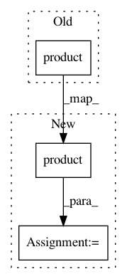

5809cb0b339612434f4f332a91a2cd3e4570c34d,gpflow/transforms.py,LowerTriangular,backward_tensor,#LowerTriangular#Any#,392
Before Change
N = int(np.sqrt(size / self.num_matrices))
reshaped = tf.reshape(y, shape=(self.num_matrices, N, N))
indices = np.array([np.hstack(x) for x in
itertools.product(np.arange(self.num_matrices), np.dstack(np.tril_indices(N))[0])])
triangular = tf.reshape(tf.gather_nd(reshaped, indices), shape=[-1])
return triangular
After Change
if self.squeeze:
y = tf.expand_dims(y, axis=0)
indices = np.vstack(np.tril_indices(self.N)).T
indices = itertools.product(np.arange(self.num_matrices), indices)
indices = np.array([np.hstack(x) for x in indices])
triangular = tf.gather_nd(y, indices)
return tf.reshape(triangular, [self.num_matrices, (self.N**2 + self.N) // 2])
def log_jacobian_tensor(self, x):
In pattern: SUPERPATTERN
Frequency: 4
Non-data size: 3
Instances
Project Name: GPflow/GPflow
Commit Name: 5809cb0b339612434f4f332a91a2cd3e4570c34d
Time: 2018-02-26
Author: james@prowler.io
File Name: gpflow/transforms.py
Class Name: LowerTriangular
Method Name: backward_tensor
Project Name: aleju/imgaug
Commit Name: 77a3d644c3aad2d2e74a2e16af77aac2429b86f1
Time: 2019-08-25
Author: kontakt@ajung.name
File Name: test/augmenters/test_contrast.py
Class Name: TestAllChannelsHistogramEqualization
Method Name: test_basic_functionality
Project Name: aleju/imgaug
Commit Name: 77a3d644c3aad2d2e74a2e16af77aac2429b86f1
Time: 2019-08-25
Author: kontakt@ajung.name
File Name: test/augmenters/test_contrast.py
Class Name: TestCLAHE
Method Name: test_many_images_rgb_to_lab_array
Project Name: GPflow/GPflow
Commit Name: d1ac7b831ad36cd0e4bdd7980819f83208345148
Time: 2018-02-07
Author: alex.ialongo@gmail.com
File Name: gpflow/expectations.py
Class Name:
Method Name: _expectation